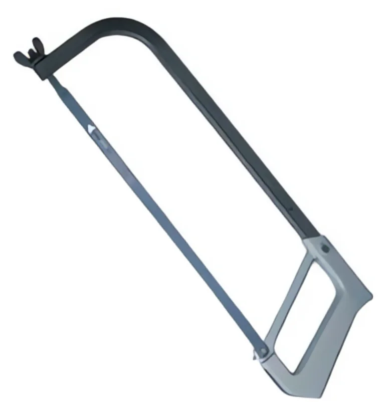

GROZ · Hacksaw Frames & Blades
Handyman's Hacksaw
CAT NR HF/15/BS · ORD NR 30010
| CAT NR (catalogue number) | HF/15/BS |
|---|---|
| ORD NR (order number) | 30010 |
| Box quantity | 48 |
| Depth of bow (h) (inch) | 4-15/64 |
| Depth of bow (h) (mm) | 106 |
| Height (H) (inch) | 5-1/8 |
| Height (H) (mm) | 130 |
| Overall length (L) (inch) | 17 |
| Overall length (L) (mm) | 430 |
Ask for a quote The catalogue PDF, page 78
“Ask for a quote” opens this product in the catalogue: add it to your quote and send it. Buyers from Africa, the Gulf and worldwide are welcome; prices in USD, EUR or INR.
From the GROZ Workshop Tools CB-05 catalogue. Not yet verified: these details were read from the printed catalogue automatically; check the catalogue page before ordering.